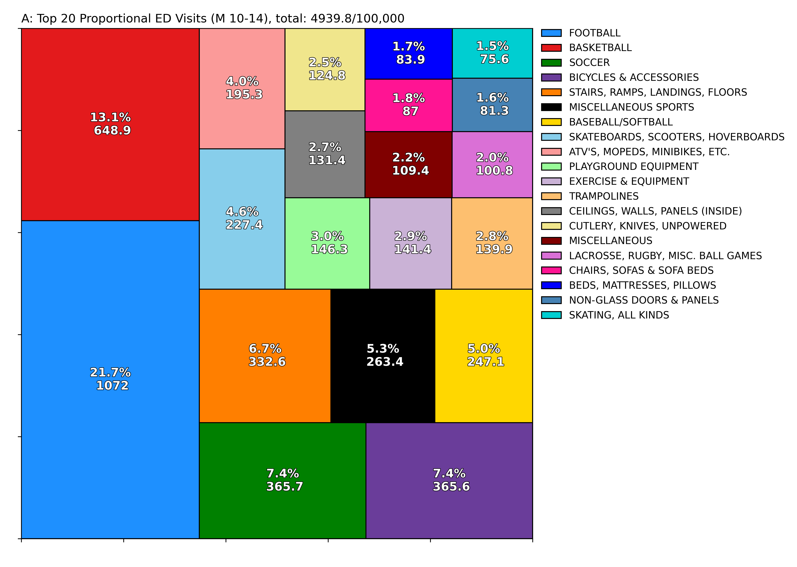
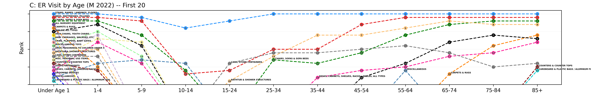
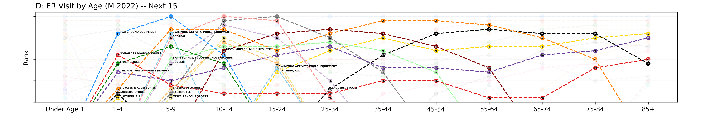
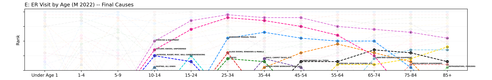
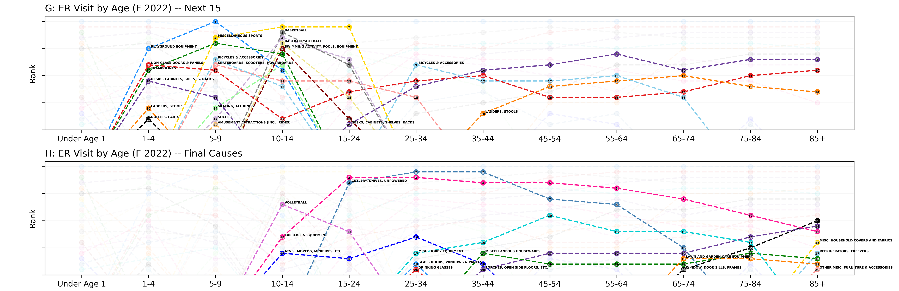
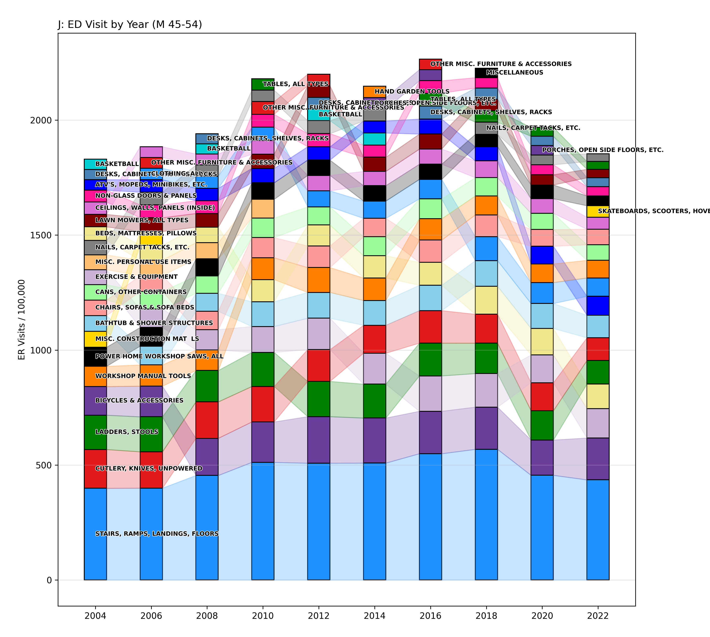
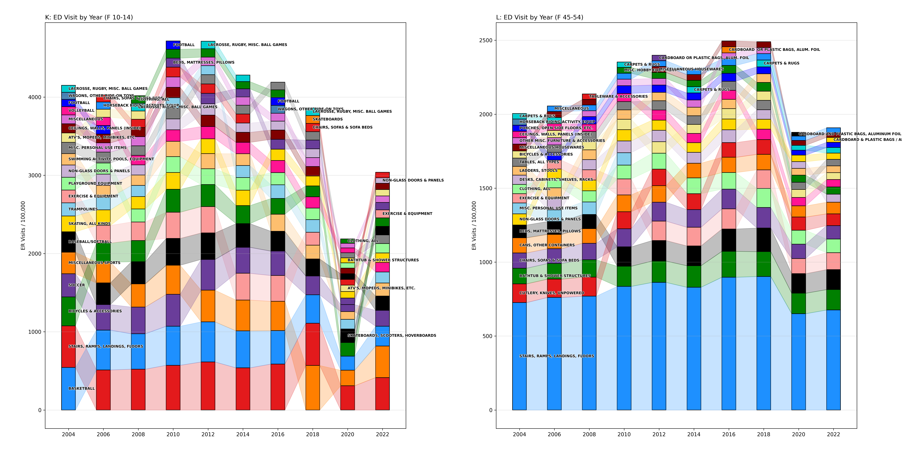

Consumer Safety Report
Background
The Consumer Product Safety Commission (CPSC) exists to evaluate the safety of consumer products available to Americans. They publish recalls, safety education, manufacturing guidelines, regulatory resources, and research. One of their recurring research studies is the National Electronic Injury Surveillance System (NEISS). This survey collects data from hospital emergency departments around the U.S. It then uses these samples to estimate overall injury probabilities for consumer product categories. The purpose is to determine lapses in safety regulation to better protect American citizens.
Updated often, newer survey years include detailed information like body part of injury, ethnicity, and if alcohol or substances were involved. Importantly, the CPSC is not concerned about "natural" ailments, automobile accidents, or other non-product-related injuries. The entire dataset encompasses nearly 100 hospitals per year and captures everything from unicycles to greenhouses. Rather than using the entirety of data provided, CPSC also provides bi-yearly summary reports by age and sex which captures the top 20 injury root causes. I'm taking a look through the data because I am curious about the dangers I am exposed to every day and how this will change with age. Furthermore, I'd like to know if some products categories have become more or less safe over the last two decades.
Select Demographics
 Let's take a look at some select data from these reports to get a better understanding of how it is formatted. Each year, a summary report tabulates the 20 most common emergency department visits by consumer product origin. The report is split into male and female and includes 12 age groups as well as a cumulative column. Provided here is an example case: Figure A shows data from 2022 for males aged 10-14. In each treemap rectangle, two values are provided - a percentage and a large decimal number. The large decimal number is the estimated rate of of injury per 100,000 population. The percentage is this value divided by the total of all decimals across the 20 root causes. Therefore, approximately 1072 boys between the age of 10 and 14 per 100,000 went to the emergency room as a result of injuries sustained from football activities or products. This accounted for 21.7% of the top 20 injuries classified by this report for this age group.
 Figure B shows 2022 data for women 85+. Quite obviously, football is not the leading cause of ER visits for this demographic. Where the young men subgroup is dominated by sports, toys, and small personal vehicles, the elderly women group is defined by home injuries.
In fact, there are only 6 shared ER causes between these demographics:
Figure B shows 2022 data for women 85+. Quite obviously, football is not the leading cause of ER visits for this demographic. Where the young men subgroup is dominated by sports, toys, and small personal vehicles, the elderly women group is defined by home injuries.
In fact, there are only 6 shared ER causes between these demographics:
The lifestyles of 10-14 year old boys and 85 year old women are quite dissimilar, so we should expect different sustained injuries.
Age Trends
Still looking at the most recent report from 2022, how do the top 20 emergency room visit causes differ between age groups? Below, the top 20 ER visits for male children younger than 1 years old are plotted across all ages.
Looking through some of these causes, there are a number that persist throughout life while others are not present in the next age group. Most interesting, there are also categories which drop out but come back later.
- Stairs, Ramps, Landings, Floors
- Beds, Mattresses, Pillows
- Bathtubs & Shower Structures
- Chairs, Sofas & Sofa beds
- Cans, Other Containers
- All Nursery Equipment
- High Chairs, Youth Chairs
- Baby Carriages, Walkers, Etc.
- Cribs, Playpens, & Baby Gates
- Drug Poisonings
- Soaps, Detergents
- Grooming Devices
- Carpets & Rugs
- Tables, All Types
- Counters and Counter Tops
- Cardboard and Plastic Bags / Aluminum Foil
- Desks, Cabinets, Shelves, Racks
- Miscellaneous
Let's now add in the next frequent ER visits as they occur over our lifespan.
Maybe as expected, these causes encompass a lot of the common injuries we sustain as an adolescent. Sports like soccer, football, basketball, baseball, swimming, and misc sports are very common causes for ER visits. Additionally, other activities like skateboarding, trampolines, playground equipment, ATVs, and bicycles are all present. The injuries that hang around across demographic are bicycles, ladders & stools, non-glass doors and panels, and ceilings walls and panels. Lastly, let's included the final emergency room visit causes which develop later in life.
A lot of the new additions relate to home-care and hobbies of older men. For instance, workshop tools (powered & unpowered, nails & tacks), mowers and lawn gear, and exercsie equipment are all added.
After looking through the root causes of product-related ER visits for men of all ages, let's take a quick glimpse at the same bump-charts for women.

Unsurprisingly, most of the injuries afflicting male infants also affect female infants. Maybe more curious are how many causes reappear later in life. 8 of the top 10 ER visits listed in the report for 85+ year old women are present for the sub-one year old age group. More dissimilarity between men and women can be seen in the activities and hobbies that lead to ER visits in the middle years of our lives.
I expected there to be more dissimilarity in Figures G & H from Figures D & E. Some of the unique categories which were not present for males were: Volleyball, Amusement Attractions, Dollies and Carts, Misc Hobby Equipment, and Drinking Glasses.
Longitudinal Comparison
 Instead of looking across demographics, let's compare all consumer reports generated since 2004. I'm interested in seeing if we can find emergent trends or changing popularity of sports or activities over time.
First, Figure I shows stacked bar-charts connected to form a ribbon chart over time for males aged 10-14. This group was selected to focus on adolescent sport over time. Each colored rectangle corresponds to a single emergency room visit root cause and each rectangle is
connected across time to adjacent neighbors if it is present in that year's list of top 20 ER visit causes. Order from bottom to top corresponds to most to least frequent injury contributor, and the y-axis value is the estimated injury rate per population of 100,000 individuals.
Instead of looking across demographics, let's compare all consumer reports generated since 2004. I'm interested in seeing if we can find emergent trends or changing popularity of sports or activities over time.
First, Figure I shows stacked bar-charts connected to form a ribbon chart over time for males aged 10-14. This group was selected to focus on adolescent sport over time. Each colored rectangle corresponds to a single emergency room visit root cause and each rectangle is
connected across time to adjacent neighbors if it is present in that year's list of top 20 ER visit causes. Order from bottom to top corresponds to most to least frequent injury contributor, and the y-axis value is the estimated injury rate per population of 100,000 individuals.
The most obvious observation is the outlier year of 2020. The emergence and impact of Sars-Cov-2 on daily life is abundantly apparent. Team sports like football, soccer, and basketball resulted in half as many injuries, and overall injury rate was approximately 60% that of the year prior. Solo activities like cycling and 'boarding' - now including hoverboarding, were less impacted and rose through the relative rankings. Looking beyond 2020, soccer has become relatively more played in recent years, rising from rank 8 to rank 3. Likewise, miscellaneous sports rose from rank 20 to rank 6. Skateboarding fell from 6th to 14th in 2018 but saw a resurgence when the category now contained dangerous hoverboards.
 Comparing this group to their fathers (or just men aged 45-54 in general) the patterns are a little different. No longer dominated by group sports, injury rate for men in this age range was much less impacted by Covid. Big risers for this group were cycling (4th to 2nd), exercise equipment (11th to 3rd), ATVs & minibikes (18th to 8th), and beds/mattresses/pillows (14th to 4th). Falling out of popularity were workshop manual (5th to 10th) and power (6th to 15th) tools.
To me this indicates a few things. One, the regular lives or at least hobbies of adult men were less impacted by the global pandemic than their adolescent counterparts. This is likely due to the high engagement in team sports for kids in the United States. This involvement is significantly diminished by 45 years of age. However, trends in adult American men are still changing over time. Men are more invested in their health as seen by the increase in cycling and exercise equipment use and less focused on project hobbies that involve a workshop. Anecdotally, these trends generally match personal experience.
Included below are the same graphics for women. Many of the overall trends are similar although the specific activities are slightly different.
Concluding Remarks
These consumer reports contain yearly data with hundreds of thousands of individual data entries. If you are interested, I think it could be worthwile to discover trends between root cause and injury location. Alternately, are there yet undiscovered categories in the top 100 or top 1000 emergency-room visits that are not very well documented but should be advertised as dangerous?
Looking through the longitudinal data and the demographic trends, most root causes seemed pretty intuitive to me. It's obvious that football leads to a large number of injuries and that ATVs and hoverboards are not very safe passtimes. Likewise, exercise equipment, powertools, and mowers are all relatively dangerous considering how much they are used. The biggest suprises to me were the amount of home injuries. Stairs are incredibly dangerous to most demographics, especially older ages. Even glass doors, walls, clothes, and carpets contribute to a surprising amount of emergency room visits each year. How much could we reduce yearly ER visits in the US if we reanalyze the environments where we live?